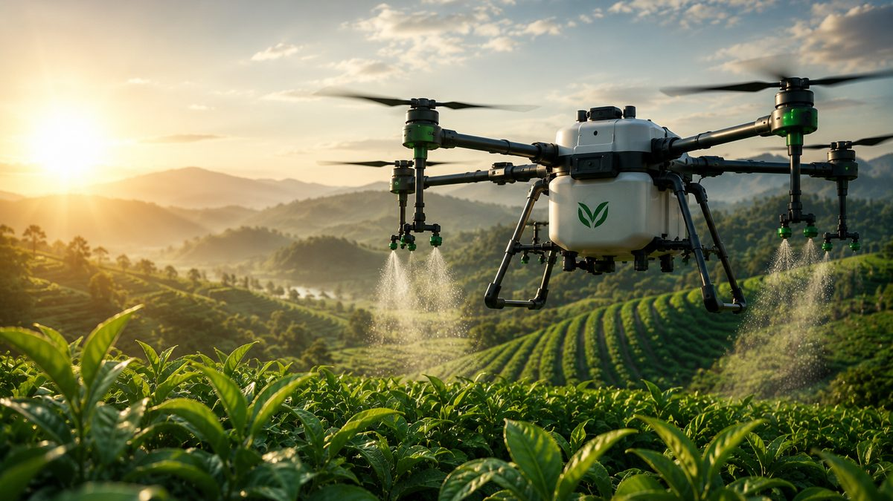

Kemenperin Dorong Sertifikasi SNI Drone Pertanian, Apa Artinya bagi Petani?

Drone pertanian semakin sering terlihat di lahan Indonesia. Dari sawah di Jawa hingga perkebunan sawit di Sumatera dan Kalimantan, drone kini dipakai untuk menyemprot pestisida dan pupuk cair.
Seiring meningkatnya penggunaan, pemerintah mulai memperkuat standar mutunya. Kementerian Perindustrian (Kemenperin) mendorong penerapan Standar Nasional Indonesia (SNI) untuk drone pertanian.
Apa yang Dilakukan Kemenperin?
Pada April 2026, Menteri Perindustrian Agus Gumiwang Kartasasmita menegaskan bahwa transformasi menuju Pertanian 4.0 harus didukung teknologi yang andal, dan penerapan standar nasional pada drone pertanian penting untuk memperkuat daya saing industri.
Kemenperin melalui Balai Besar Standardisasi dan Pelayanan Jasa Industri Logam dan Mesin (BBSPJILM) ditunjuk untuk melakukan sertifikasi produk drone pertanian berdasarkan SNI 9199:2023. Standar ini mengatur syarat mutu dan metode uji untuk memastikan kualitas produk.
Apa Manfaatnya?
Bagi Petani dan Pembeli
Standar yang jelas membantu pembeli membedakan produk yang sudah teruji. Mutu yang seragam juga berarti risiko membeli drone dengan kualitas di bawah standar menjadi lebih kecil.
Bagi Industri
Produk yang lolos sertifikasi berpeluang menjangkau pasar lebih luas, termasuk pengadaan pemerintah, serta membuka kesempatan bagi produk dalam negeri untuk bersaing di pasar global.
Drone Pertanian Makin Diminati
Minat terhadap teknologi ini terlihat di pameran INAGRITECH 2026 yang digelar 28–30 Juli 2026 di JIExpo Kemayoran, Jakarta. Pameran ke-12 ini diikuti lebih dari 350 perusahaan dalam dan luar negeri, dengan produk mulai dari traktor dan alat mekanisasi, drone penyemprot, irigasi pintar, hingga solusi digital berbasis IoT.
Kampus juga ikut berinovasi. Universitas Hasanuddin, misalnya, mengembangkan drone penyemprot sekaligus penebar benih berbasis navigasi GPS yang kini diperluas pemanfaatannya dengan dukungan Kementerian Pertanian.
Tips Memilih Drone Pertanian
Pastikan Mutu dan Keasliannya
Pilih produk resmi dari distributor yang jelas, dan tanyakan standar atau sertifikasi yang sudah dimiliki produknya.
Cek Layanan Purna Jual
Drone adalah alat kerja yang dipakai rutin. Pastikan suku cadang, baterai, dan layanan servis mudah didapat.
Sesuaikan dengan Lahan
Lahan datar dan luas, lahan miring, atau kebun dengan kanopi rapat membutuhkan kemampuan drone yang berbeda, mulai dari kapasitas tangki hingga fitur mengikuti kontur lahan.
Siapkan Operator Terlatih
Hasil penyemprotan sangat bergantung pada operator. Pastikan ada pelatihan pengoperasian dan perawatan dari penyedia drone.
Kesimpulan
Dorongan sertifikasi SNI menunjukkan bahwa drone pertanian sudah dianggap alat kerja utama, bukan sekadar teknologi percobaan. Bagi petani dan perusahaan perkebunan, ini saat yang tepat untuk memilih drone dengan lebih cermat.
Sedang mencari drone pertanian? PT Diesel Agri Sukses Sejahtera adalah distributor resmi drone EAVision dan VectorAgr, lengkap dengan dukungan suku cadang dan servis.
Butuh saran? Hubungi kami.
Sumber: Koran Jakarta, MCINEWS.ID, JIExpo, MataKita.